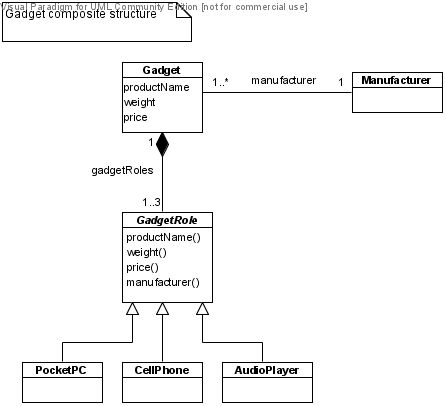
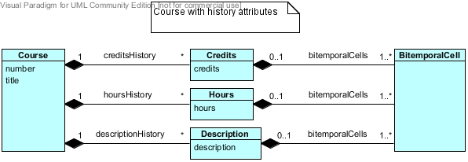
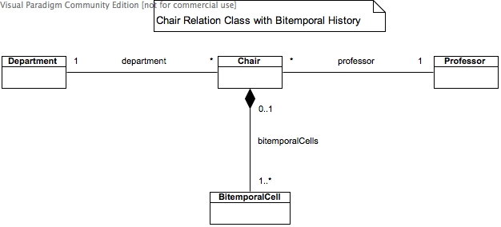
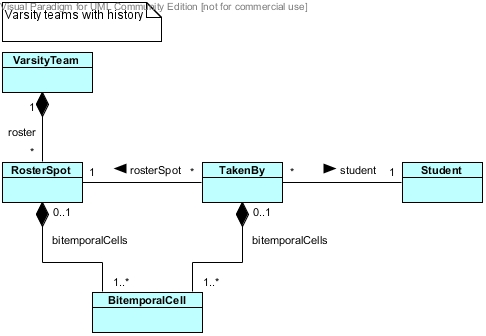
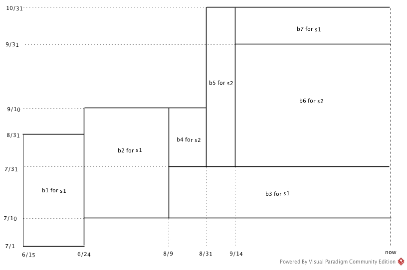
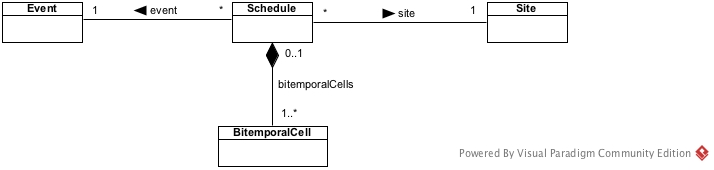
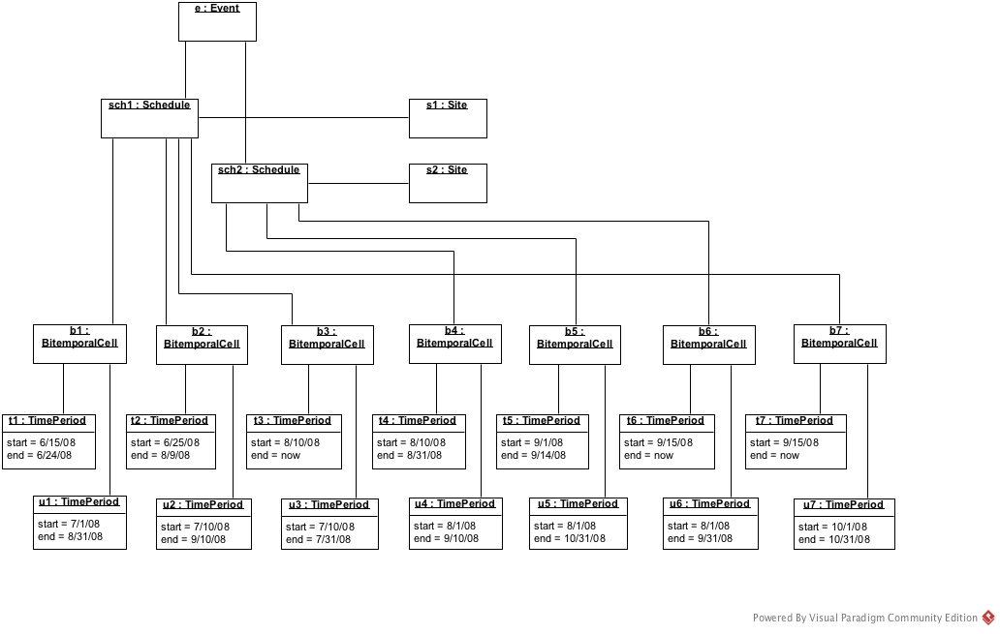

Exercise Set #4 Solutions
1.
class CrewMember
{
String IDNum;
String name;
int age;
Pilot pilot;
Attendant attendant;
}
class Pilot
{
String rank;
int experienceInYears;
CrewMember crewMember; // the inverse of CrewMember.pilot
String IDNum() { return crewMember.IDNum; }
String name() { return crewMember.name; }
int age() { return crewMember.age; }
}
class Attendant
{
String position;
CrewMember crewMember; // the inverse of CrewMember.attendant
String IDNum() { return crewMember.IDNum; }
String name() { return crewMember.name; }
int age() { return crewMember.age; }
}
2.
-
Advantages of the composite-structure method over true inheritance:
- The effect of inheritance can be simulated in DBs that do not support inheritance.
- The effect of multiple inheritance can be simulated in OODBs that do not support multiple inheritance.
- There is no potential combinatorial explosion in the # of subclasses that
true multiple inheritance hierarchies could generate.
-
Advantages of true inheritance over the composite-structure method:
- Automatic inheritance of features; no need to implement strong-composition relations
and no need for delegation functions.
- Inheritance polymorphism, i.e., dynamic binding of function code.
4.

class Gadget
{
String productName;
float weight;
float price;
Manufacturer manufacturer;
Set<GadgetRole> gadgetRoles;
}
abstract class GadgetRole
{
Gadget gadget; // the inverse of Gadget.gadgetRoles
String productName() { return gadget.productName; }
float weight() { return gadget.weight; }
float price() { return gadget.price; }
Manufacturer manufacturer() { return gadget.manufacturer; }
}
class PocketPC extends GadgetRole { ... }
class CellPhone extends GadgetRole { ... }
class AudioPlayer extends GadgetRole { ... }
6.
The following are example answers.
There may be other good answers depending on specific contexts, purposes, and functions
of airline databases.
- Airport
- start: the time an airport opened
- end: the time an airport closed
- Flight
- start: the time a flight was introduced into the flight schedule
- end: the time a flight was removed from the flight schedule
- FlightInstance
- start: the time reservations for a flight instance commenced
- end: the time post-flight servicing for a flight instance was completed by mechanics
- CanceledFlightInstance: the time cancellation became official; canceled date
- Airplane
- start: the time an airplane was bought or rent by the airline company
- end: the time an airplane was sold, returned to the renter, scrapped, or destroyed by an accident
- Mechanic: the time period(s) of a mechanic's official employment
- CrewMember: the time period(s) of a crew member's official employment
- Passenger
- one-time passenger
- start: the time a reservation was made
- end: the arrival time of the flight instance the passenger was on, or
the time a reservation was canceled
- account holder (such as frequent-flier account)
- start: the time an account was opened
- end: the time an account was closed
7.

class Course
{
String number;
String title;
Set<Credits> creditsHistory;
Set<Hours> hoursHistory;
Set<Description> descriptionHistory;
}
Instead of Set, TreeSet or LinkedList may be used to maintain histories sorted in
chronological or reverse chronological order.
class Credits
{
int credits;
Set<BitemporalCell> bitemporalCells;
}
Similarly for the Hours and Description classes.
class BitemporalCell
{
TimePeriod validTime;
TimePeriod transactionTime;
}
8.

This is a 2-tuple model of chairperson using the relation class Chair:
Each Chair-object represents a tuple ⟨d, p⟩
meaning professor p was or has been the chairperson of
department d, with each tuple associated to its bitemporal history.
class Chair
{
Department department;
Professor professor;
Set<BitemporalCell> bitemporalCells;
}
Department class might have a filed of Set<Chair> type
implementing the inverse relation of department to access the chair data efficiently.
Professor class might also have a filed of Set<Chair> type, but it would not be useful for
most purposes since most professors have never been chairs and efficient retrieval of
a professor's chair data is not a common or frequent query.
9.

class Contract
{
Set<Architect> architects;
Set<Company> companies;
Set<Building> buildings;
Set<BitemporalCell> bitemporalCells;
}
Architect, Company, Building classes might have fields of Set<Contract> type
implementing the inverse relations of
architects, companies, buildings, respectively.
10.

Java implementation omitted.
11.
1.
06/15/08 s1 b1 = [06/15/08, 06/24/08] × [07/01/08, 08/31/08] logically deleted
06/25/08 s1 b2 = [06/25/08, 08/09/08] × [07/10/08, 09/10/08] logically deleted
08/10/08 s1 b3 = [08/10/08, now] × [07/10/08, 07/31/08] active
08/10/08 s2 b4 = [08/10/08, 08/31/08] × [08/01/08, 09/10/08] logically deleted
09/01/08 s2 b5 = [09/01/08, 09/14/08] × [08/01/08, 10/31/08] logically deleted
09/15/08 s2 b6 = [09/15/08, now] × [08/01/08, 09/31/08] active
09/15/08 s1 b7 = [09/15/08, now] × [10/01/08, 10/31/08] active

2.
The following model is used in this solution.

